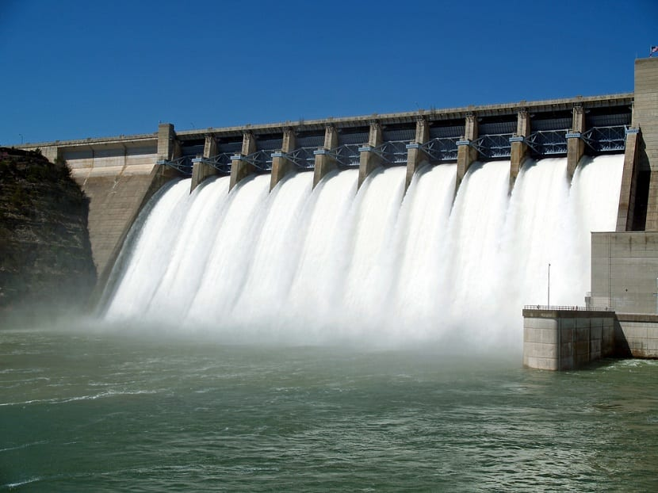
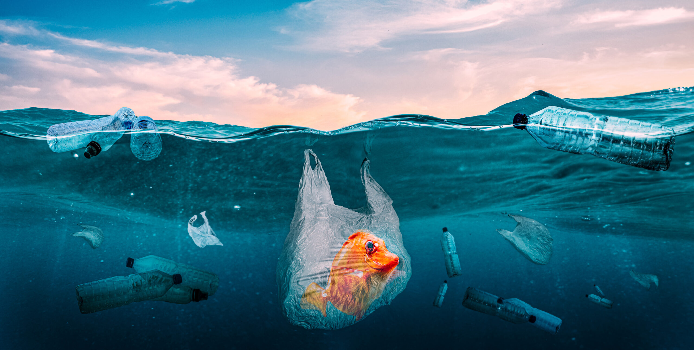

Tipos de Energía
Energía Solar: Se obtiene del sol mediante paneles solares y es una de las más limpias y renovables.
Energía Eólica: Utiliza el viento para generar electricidad mediante aerogeneradores.
Energía Hidráulica: Aprovecha la fuerza del agua para producir energía eléctrica.
Biomasa: Genera energía a partir de procesos como la combustión de materia orgánica.
Emisiones de CO₂
Las fuentes de energía fósil (carbón, petróleo y gas natural) son responsables de más del 75% de las emisiones de gases de efecto invernadero a nivel global. Esto tiene un impacto significativo en el cambio climático y requiere una transición urgente hacia fuentes renovables.
Plan 2030 de la ONU
La ONU, a través de los Objetivos de Desarrollo Sostenible (ODS), promueve que para el 2030 al menos el 50% de la energía mundial provenga de fuentes renovables. Este plan busca garantizar el acceso a energía limpia y asequible para todos, reducir las emisiones y fomentar la sostenibilidad global.

Biodiversidad
La biodiversidad se refiere a la variedad de formas de vida que existen en la Tierra, incluyendo la diversidad de especies, genes y ecosistemas. Esta riqueza biológica es esencial para el equilibrio y la salud de nuestro planeta, ya que cada especie juega un papel único en su ecosistema, contribuyendo a procesos como la polinización, la descomposición de materia orgánica, la regulación del clima y la purificación del agua.
Reciclaje
El reciclaje es el proceso de convertir materiales desechados en nuevos productos para evitar el desperdicio de recursos útiles, reducir el consumo de materias primas frescas, disminuir el uso de energía y reducir la contaminación del aire y del agua. Este proceso es fundamental para la sostenibilidad ambiental y la conservación de los recursos naturales.

Ahorro de Agua
El agua es un recurso esencial para la vida en la Tierra. Sin embargo, a pesar de su importancia, muchas regiones del mundo enfrentan escasez de agua debido al uso excesivo, la contaminación y el cambio climático. El ahorro de agua no solo es crucial para garantizar el suministro de este recurso vital, sino también para proteger el medio ambiente y promover la sostenibilidad.
Contaminación Plástica
La contaminación plástica es uno de los problemas ambientales más graves que enfrenta nuestro planeta. Cada año, millones de toneladas de plástico terminan en los océanos, ríos y otros ecosistemas, causando daños significativos a la vida silvestre, los hábitats naturales y la salud humana.
Últimas Noticias sobre Energías Renovables
Titular: Ministerio de Energía y Minas busca colaboración para la transición energética. Leer más
Titular: El dilema que enfrenta España por producir demasiada electricidad con energías renovables. Leer más
Titular: Para 2023, Colombia perdió seis puntos en el Índice de Transición Energética del FEM. Leer más

Titular: Energías renovables reciben 40 veces menos subsidios que los combustibles fósiles. Leer más
Titular: Sólo 1% de empresas industriales opta por energía solar: Niko. Leer más
Titular: Bachoco instalará paneles de energía verde en sus instalaciones y centros de distribución. Leer más
Titular: La empresa española de energías limpias y agua, Cox, cae en su debut bursátil el viernes. Leer más
Titular: La transición energética acelera el proceso de fusiones y adquisiciones de empresas en Argentina. Leer más